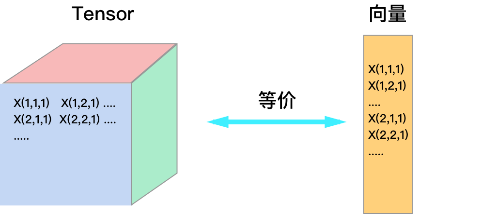
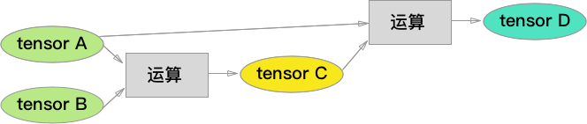
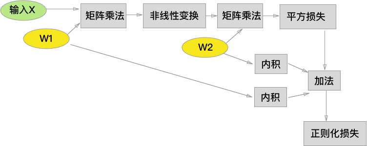
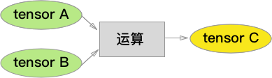
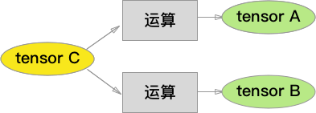

神经网络计算模型 - 理论解释
传统机器学习教科书中的神经网络通常是简单的多层感知机，采用全联接层作为隐层，并经过一个 softmax 输出，现代的神经网络架构脱胎于此，却早已脱离这样的简单模型，无论是 Caffe 还是 Theano，都具有可定制，可扩展的优点，允许用户自行搭建符合需求的网络架构和运算。
本文从 数据的抽象，运算的抽象 两个角度介绍现代神经网络的计算模型。
用 Tensor 抽象数据
传统机器学习模型严重依赖于 feature engineering，所以模型的输入一般是计算好的特征向量，但是基于神经网络的机器学习系统利用中间层自动得到合适的特征，所以数据往往以更为原始而稠密的形式输入网络（图像，音视频），并且在网络内部保持这种 N 维数组的结构向后传播，这种 N 维数组也叫 tensor。
采用 tensor 或向量在计算上并无本质区别，将 tensor 拉伸就变成向量，如下图所示，假设输入标量为 \(z\) ，相对于 tensor \(X\) 计算梯度时
\[
\frac {\partial z}{\partial X_{i,j,k} } = \frac {\partial z}{\partial 向量化(X)_n }
\]
其中 \(n\) 为 \( X_{i,j,k} \) 在 \( X \) 向量化后所在的位置。Tensor 的好处是降低了用户的思维负担，保持了数据的原始结构，目前所有的神经网络工具都使用 tensor 来存储数据。

使用向量的好处是方便写公式，后文中 \( X_i \) 表示 tensor \( X \) 以某种方式拉伸成向量后的第 \( i \) 个元素。
由运算构成网络
运算（operation）就是函数，一个运算接收一个或多个 tensor 作为输入，产生一个 tensor 作为输出，不同的运算的组合成完整的神经网络。

下面列举几种常见的运算，默认所有大写字母都代表 tensor：
1. 矩阵乘法（全联接层）
输入: 数据 \(X\)，参数 \(W\)
输出: \(Y\)
说明: 运算时将 \(X\) 拉伸为向量，假设长度为 \(n\)，输出 \(Y\) 长度为 \(m\)，那么 \(W\) 矩阵的大小为 \(m\)x\(n\)，且 \(Y=WX\)。
2. 卷积
输入: 数据 \(X\)，卷积核 \(H\)
输出: \(Y\)
说明: 运算时将 \(X\) 与 \(H\) 做卷积（神经网络意义下的卷积，不翻转 \(H\)），假设 \(X\) 的长宽为 \(h\)x\(w\), \(H\) 的长宽为 \(m\)x\(n\)，那么输出 \(Y\) 的长宽为 \((h-m+1)\)x\((w-n+1)\)。
3. 非线性变换
输入: 数据 \(X\)
输出: \(Y\)
说明: 将 \(X\) 逐元素做非线性变换（例如 sigmoid，ReLu等），输出到 \(Y\)，\(Y\)与\(X\) 形状一致。
4. 平方误差
输入: 模型输出 \(f\)，训练数据 label \(y\)
输出: \(Loss\)
说明: \(Loss=0.5*(y-f)^2 \)
5. 内积
输入: 数据 \(X\)，数据 \(Y\)
输出: \(dot(X,Y)\)
说明: \(dot(X,Y)\) 为两路输入的逐元素相乘后求和，是一个标量。
利用以上运算节点以及基本的算术运算，我们就可以像 搭积木 一样，构建一个经典的3层神经网络，绿色为输入，黄色为模型参数，为节约空间，运算之间的 tensor 节点被我省去了。注意到，图中我包含了一个L2-正则项。

构造完运算图后，我们只需要在网络的输入端提供 tensor \(X\)，并让 \(X\) 随着网络流动 (flow)到输出层即可，我想这就是 TensorFlow 这个库的命名的由来。
使用 backprop 计算梯度
神经网络相较其它模型的优势之一，就是能够使用 backprop 算法自动且高效地计算出梯度，它本质上是一种 动态规划，遵循推导动态规划算法的一般套路，我们首先在运算图中定义梯度计算的递归关系。
1. 计算目标
假设模型的损失函数的输出是一个标量 \(z\)（大部分情况下如此），针对我们感兴趣的参数 tensor \(W_i\) 我们想要得到它们相对于 \(z\) 的梯度
\[
\frac {\partial z}{\partial W_1 },\frac {\partial z}{\partial W_2 } ...
\]
2. 递归关系
运算图中的梯度具有递归关系，对于下图：

利用导数的链式法则，假设 \(C\) 的长度为 \(m\)，\(A\) 的长度为 \(n\)，\(z\) 对于 \(A\) 的每个元素的导数为：
\[
\frac {\partial z}{\partial A_i }＝\Sigma_{j=1..m}\frac {\partial z}{\partial C_i } \frac{\partial C_j}{\partial A_i }
\]
将 \(A_i\) 组合成 tensor，得到：
\[
\frac {\partial z}{\partial A }＝\Sigma_{j=1..m}\frac {\partial z}{\partial C_j } \frac{\partial C_j}{\partial A}
\]
其中，\(\frac {\partial z}{\partial A }\) 是 tensor 拉伸成的向量，向量的元素是 \(\frac {\partial z}{\partial A_{i=1..n} }\)。接着，使用矩阵乘法将求和符号省略，我们得到：
\[
\frac {\partial z}{\partial A }＝(\frac{\partial C}{\partial A})^T \frac {\partial z}{\partial C }
\]
其中，我们利用了 雅可比矩阵
\[
\frac{\partial C}{\partial A}=
\begin{bmatrix}
\frac{\partial C_1}{\partial A_1} & \frac{\partial C_1}{\partial A_2} & ...\\
\frac{\partial C_2}{\partial A_1} & \frac{\partial C_2}{\partial A_2} & ...\\
... & ... & ...
\end{bmatrix}
\]
以上推导说明，网络前级的梯度可以由后级的梯度乘以一个雅可比矩阵得到，这个结论适用于 任意 的运算节点，这给神经网络的软件架构带来了极大的灵活性：对于用户定义的任何运算，只要正确实现了这个雅可比矩阵的乘法，就能加入到梯度计算中来，这也是 Caffe 库中的每种 Layer 只要定义 Forward 和 Backward 接口就能参与网络构建的原因。
当然，一个 tensor 可以被一个以上的后续节点使用，如下图：

根据导数的性质，我们有：
\[
\frac {\partial z}{\partial C_i }＝\Sigma_{j=1..m}\frac {\partial z}{\partial A_j } \frac{\partial A_j}{\partial C_i } + \Sigma_{y=1..k}\frac {\partial z}{\partial B_y } \frac{\partial B_y}{\partial C_i }
\]
类似于上面的推导，我们得到矩阵形式的递归公式：
\[
\frac {\partial z}{\partial C }＝(\frac{\partial A}{\partial C })^T \frac {\partial z} {\partial A } + (\frac{\partial B }{\partial C })^T \frac {\partial z}{\partial B }
\]
简而言之，从两路流过来的梯度需要加起来，得到 \(C\) 节点的梯度。
3. 边界情况
网络的最后级节点就是在输出端 \(z\)，边界情况十分简单：
\[
\frac {\partial z}{\partial z } = 1
\]
4. backprop
定义了递归关系和边界情况后，我们可以发现大量冗余的计算：所有流向一个节点 \(A\) 的节点，总是需要计算一遍 \(\frac {\partial z}{\partial A } \)。此时我们有两种选择，一种是将计算后的结果缓存到一张查找表里，避免重复计算，也可以调整计算顺序，从网络的末端向前计算，这就是大部分动态规划采用的 bottom-up 策略，在神经网络中，这称作反向传播（backprop）
常见运算节点的 backprop
上面提到，无论进行什么运算，backprop 总是雅可比矩阵的转置乘以后级的梯度，但是，对于某些运算来说，这个矩阵乘法可以表现为不同的形式。
1. 矩阵乘法（全联接层）
输入: 数据 \(X\)，参数 \(W\)
输出: \(Y＝WX\)
backprop: 很容易得到
\[\frac {\partial z}{\partial X }＝W^T \frac {\partial z}{\partial Y }\\
\frac {\partial z}{\partial W }＝\frac {\partial z}{\partial Y } X^T \]
2. 非线性变换
输入: 数据 \(X\)
输出: \(Y=nonlinear(X)\)
backprop: 将 \(X\) 逐元素做非线性变换（例如 sigmoid，ReLu等），输出到 \(Y\)，\(Y\)与\(X\) 形状一致，所以雅可比矩阵是一个对角矩阵，矩阵乘法退化成逐元素的乘法。
3. 卷积
比较麻烦，留作练习吧，推导时需要草稿纸画一画。在计算雅可比矩阵时，你会发现每一行都是卷积权重加上一个位移，所以最终的矩阵乘法，会等价于卷积。
用矩阵乘法来等价卷积，是一种常用的卷积实现方法，因为许多数值计算库没有实现卷积，但一定有高效的矩阵乘法。